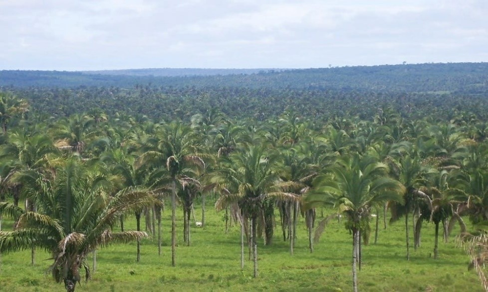
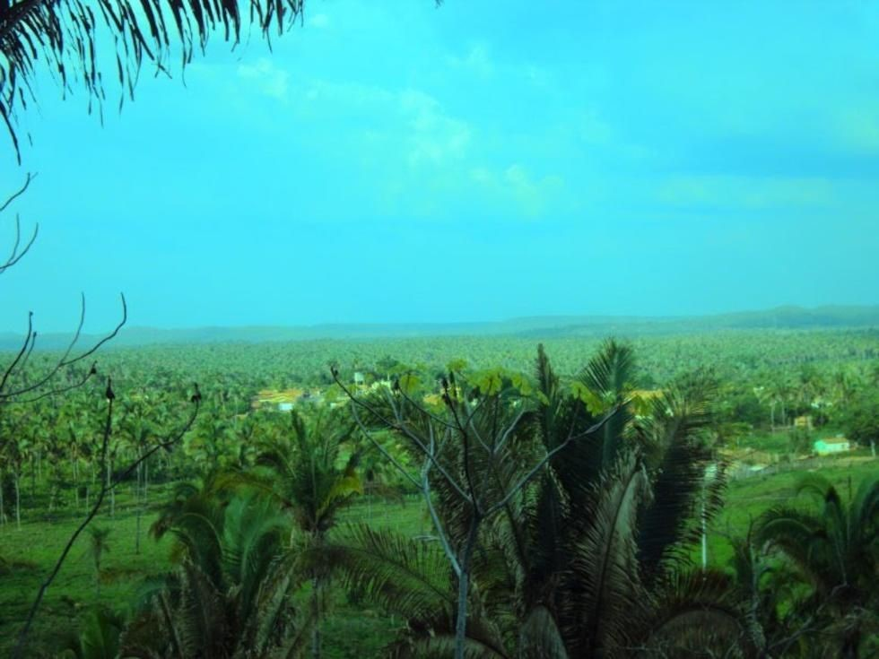
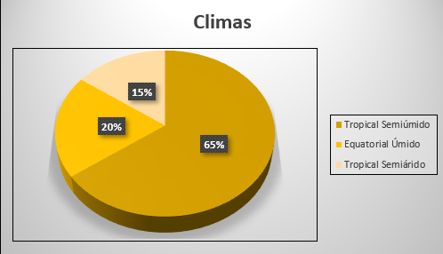
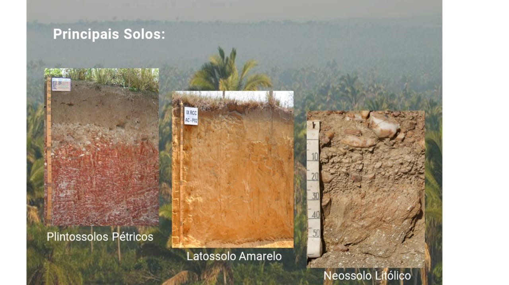
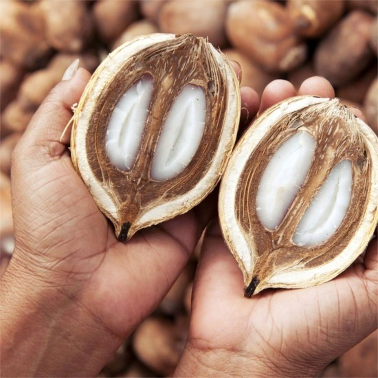
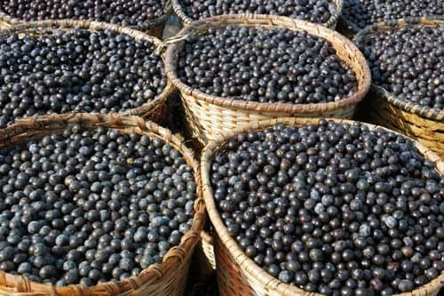
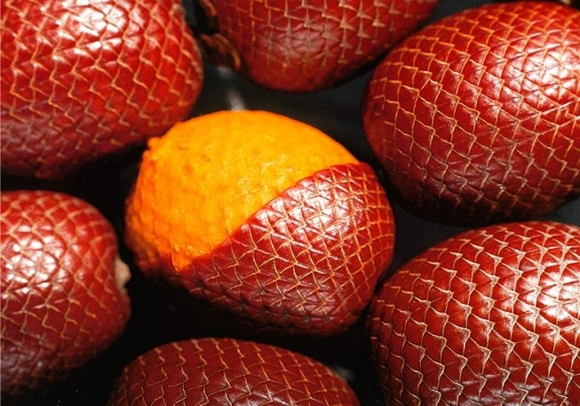
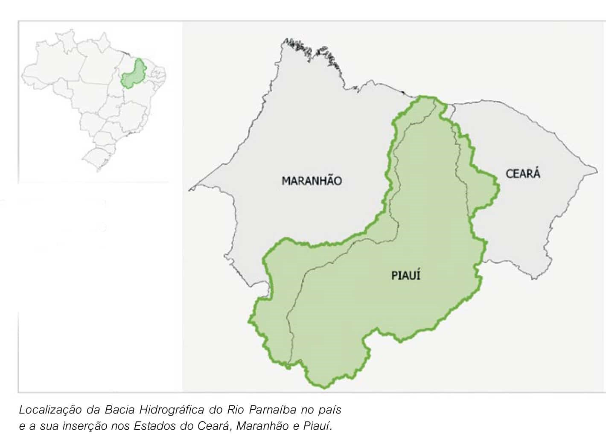
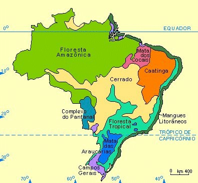

Sobre o Bioma
Segundo Rodolfo Alves Pena e o Portal São Francisco (2021), a Mata dos Cocais é um ecossistema que está entre a floresta amazônica, a caatinga e o cerrado, no qual tem uma floresta de transição, situada em regiões do norte, nordeste e meio-norte do Brasil. Ocupa diversos estados no território brasileiro e possui uma grande diversidade de fauna e flora. É uma região que sobrevive a partir da extração de óleos para cosméticos e possui um cultivo bem adaptado. Este artigo irá trazer algumas informações sobre suas características.

Sobre a vegetação
Segundo o portal Mundo Educação a Mata dos cocais corresponde a uma composição vegetal que se encontra posicionada entre a caatinga, a floresta Amazônica, e o cerrado, é considerada um campo de transição dos biomas citados. Nessa formação vegetal é possível encontrar, várias espécies importantíssimas que ocupam maior parte lugar. Os dois principais tipos de vegetação presentes no bioma desempenham função de ampla importância na vida das pessoas que vivem do extrativismo na região. Essas atividades desenvolvidas com o babaçu e a carnaúba não geram nenhum prejuízo ambiental, uma vez que são retirados exclusivamente os frutos e as folhas que são naturalmente reproduzidas pela planta. (FREITAS,2021)
Sobre as paisagens
De acordo com o Portal Ambientebrasil, um lugar para você poder ver a Mata dos Cocais é São Luís (MA), no leste da cidade se encontra a Mata dos Cocais e ao oeste o início da floresta Amazônica.
Sobre o clima
Ele possui três climas: tropical Semiúmido (65% predominado), Equatorial Úmido (predominando 20% do bioma), tropical semiárido que predominantemente 15%.
Sobre o solo e o relevo
De acordo com Débora Silva e Késia Guizi (2021), o solo da Mata dos Cocais é pobre, mas as raízes das árvores fazem uma rápida absorção de nutrientes, além de ser composto por laterítica, óxido de ferro e alumínio, possuí um alto nível de salinidade nos mangues, sendo assim é uma região que facilita a transição de animais terrestres e marinhos. Apesar de ser uma região rica em matéria orgânica, o solo tem seus recursos minerais como níquel, ferro, ametista, argila, alumínio entre outros, porém a condição do solo para a agricultura pode ser considerada regular de acordo com a região. O relevo é a parte superficial da litosfera, ou seja, cama sólida da Terra. É onde ocorrem as transformações geológicas, sendo também local de habitação do ser humano, e da maior parte dos animais terrestres. Resumindo, o relevo é o conjunto de formas físicas que compõe a superfície da Terra. (PENA, 2021) A Mata dos Cocais se formou ocupando lacunas de outras formações (cerrados e florestas amazonenses), que foram desmatadas. (SUÇUARANA, 2021) O relevo da Mata dos Cocais é bem diversificado. Apresenta formas como a planície, as depressões, o planalto, - se localiza no planalto do Maranhão e Piauí - estrutura rochosa formada por rochas cristalinas e sedimentares. (SILVA, 2014) (Portal Toda Matéria, 2021)
Sobre os frutos e vegetais
Segundo o site Toda Matéria, por causa das palmeiras, as árvores de grande porte como o babaçu, o buriti, o açaí, a carnaúba e a oiticica, são importantes no desenvolvimento econômico da região. Outras frutas como caju, manga e tamarindo são comuns na região; diversas árvores que surgem na paisagem são: Caneleiro, Aroeira, Ipê, Sapucaia, dentre outras. De acordo com o Blog Tudo Gostoso, o camarão é muito usado nos pratos desse bioma. E pode ser consumido com açaí e em deliciosas tortas. E entre outros frutos do mar. O site Inda Vou Lá, afirmou que pedaços que são menos nobres do boi, como bucho, são muito consumidos. E o site Tudo Gostoso, disse que a carne de sol é muito usada.
A imagem acima refere-se ao babaçu
A imagem acima refere-se ao açaí.
A imagem acima refere-se ao buriti.
Sobre os corpos de água
Segundo o Portal Prepara Enem o índice pluviométrico no bioma da Matas de Cocais é elevado, pode chegar alcançar entre 1.500 mm e 2.200 mm anuais. Nos rios vivem a ariranha, o boto, o acará-bandeira (peixe), entre outras espécies. Alguns dos principais rios e bacias hidrográficas que passam no bioma são a Bacia do Rio Parnaíba, abastecida principalmente pelo Rio Parnaíba e seus afluentes, a bacia abrange o estado do Piauí, Maranhão e Ceará (MACEDO,2019). Segundo o Portal CODEVASF a Bacia Hidrográfica do rio Mearim cuja foz, ocorre o fenômeno da Pororoca, é a maior do Maranhão. A Bacia Hidrográfica do rio Tocantins Araguaia está localizada em Tocantins; Goiás; Mato Grosso; Pará; Maranhão e Distrito Federal, sendo composta pelos seus principais afluentes, o rio Tocantins e o rio Araguaia, sendo localizada também dentro da área do bioma. (MACEDO,2019). Essas bacias hidrográficas são as principais, mas em conjunto com outros rios que passam dentro do território da Mata dos cocais, são muito bem utilizadas pela população e muito importantes para o meio ambiente.
Sobre os animais
Segundo o Portal Toda Matéria, a uma grande diversidade de animais nessa região, lá se encontra animais da Amazônia, Caatinga, Cerrado e além de espécies endêmicas (que só existem nessa região). Alguns animais que são encontrados na Mata dos Cocais:
• Arara-vermelha – De acordo com o Portal infoescola, a Arara-vermelha é uma das maiores aves brasileiras, elas se alimentam com sementes e usam o bico como terceiro pé, elas têm um papel muito importante no sistema ecológico pelas suas fezes derramam as sementes dos vegetais que comem.
• Gavião-real – De acordo com o Portal Parques das Aves, é a maior ave de rapina do Brasil, essa ave só constrói seus ninhos nas arvores maiores de 30 metros e ela vive até 40 anos.
• Ariranha – De acordo com o Portal Biologia net, as Ariranha moram em lugares com água doce e em lugares com uma grande quantidade de alimentos, infelizmente as Ariranha estão em ameaça a extinção, por conta das caças e também das vendas desse animal para ser criado como animal de estimação.
• Gato-do-mato – De acordo com o Portal Fauna News (2020), o Gato-do-mato assim como a Ariranha está sendo ameaçado a extinção por perda de habitat e caça, seu tamanho é parecido com um gato comum. Ele alterna entre o dia e noite para não cruzar com Jaguatiricas e ele se alimenta de roedores, aves e répteis.
• Macaco-prego – De acordo com o Portal Anami, o Macaco-prego também chamados de primatas do novo mundo, vivem em grupos de até 40 macacos e se alimentam de insetos e frutos.
• Lobo-guará - De acordo com o Portal Onçafari , ele é considerado um símbolo do Cerrado e está em quase ameaça a extinção, ele se alimenta de frutos, de pequenos animais vertebrados, insetos e ovos, mas também pode casar animais de porte grande.
• Jacu –De acordo com o Portal Olhar Turístico, essa ave tem a habilidade de se camuflar entre árvores e folhas, esse pássaro chega até 1 metro de altura e lembra muito uma galinha se alimenta de folhas e frutos. Esse animal também está com perigo de extinção.
• Paca – De acordo com o Portal Native, vive em tocas e buracos perto de rios e lagos, esse animal normalmente é solitário e as vezes é encontrado em duplas, a Paca se alimenta de brotos e frutos caídos.
• Cutia – Segundo o Portal escola britannica, Cutia é um roedor noturno que vive em tocas de outros animais ou em ocos de paus e se alimenta de sementes e frutos. Elas costumam enterrar alimentos e depois desterrar em momentos de falta de alimentos.
• Acará-bandeira – De acordo com o Portal Aquarismo Paulista, o peixe Acará-bandeira vive em rios e córregos no meio a uma densa vegetação aquática, se alimenta de crustáceos e insetos.
imagem acima refere-se a um dos animais citados a paca.
Sobre os estados
A mata dos Cocais situada na região norte nas florestas úmidas, e em terras semiáridas do Nordeste. Sendo uma zona de transição entre biomas Cerrado, Caatinga e Floresta Amazônica. Se entende entre Ceará, Rio Grande do Norte e Tocantins. Abrange predominantemente o meio-norte, Maranhão e Tocantins.
Sobre as comidas típicas
Arroz de Cuxá:
Segundo o Tudo Gostoso, o arroz de Cuxá é o prato mais tradicional do Maranhão. É feito com a vinagreira, conhecida como azedinha e servido como acompanhamento frutos do mar.
Ingredientes:
• Vinagreira (erva verde meio amarga)
• 1 tomate picado
• 1 cebola picada
• 1 pimentão picado
• Pimentinha de cheiro a gosto
• 150 g de camarão seco
• Gergelim a gosto
• 1/2 kg de arroz branco cozido
• Azeite
Modo de preparo:
• Coloque a vinagreira para cozinhar até murchar, retire do fogo escorra, e de umas batidas nela com a outra face da faca.
• Refogue todos os temperos em azeite, coloque o camarão seco, um pouco do gergelim e a vinagreira, mexendo sempre para incorporar ao refogado.
• Depois vá acrescentando o arroz já cozido, não esquecendo de que tem que ficar bem verdinho, por conta da vinagreira.
• Por fim e só degustar esse típico arroz maranhense.
Fonte: Portal Uol, 2020
Arroz Maria Isabel:
Segundo o site Quero Viajar mais, o prato Maria Isabel foi criado pelas famílias mais pobres do interior do Piauí.
Esse prato é bem simples, contém apenas em picadinho de carne de sol com arroz temperado.
Ingredientes:
• 1 kg de arroz
• 1 kg de carne de sol picada
• 2 cebolas
• 1 cabeça de alho
• 2 maços de cheiro verde
• 4 pimentas de cheiro
• 4 folhas de louro
• 10 ml de azeite de oliva
• 50 ml de óleo
Modo de preparo:
• Lave a carne seca picada e coloque-a para dourar em óleo quente.
• Em seguida, acrescente a cebola e o alho e deixe refogar bem.
• Coloque o arroz misturando bastante com os temperos e a carne seca, acrescentem seguida água quente e a pimenta de cheiro cortada ao meio.
• Abafe a panela e aguarde até que o arroz fique solto..
A imagem é referente ao prato explicado, o Arroz Maria Isabel.
Vídeo
Segue o vídeo gravado pelo grupo de um modelo de receita realizada com os ingredientes típicos da Mata dos Cocais, espero que aproveitem : )
Nutrientes
Nutrientes e Vitaminas do Açaí O Açaí é uma fruta brasileira muito consumida pelos brasileiros, mas muito além de um sorvete essa fruta também é cheia de nutrientes e vitaminas. O Açaí possui Vitamina B1, Vitamina B2 e Vitamina C, além de ser fonte rica de Proteína, Lipídios, Fibras, Cálcio, Ferro e Fósforo, e é por ela ter tantas propriedades que traz diversos benefícios para a saúde como: ajuda no combate a anemia, controla a pressão alta, ajuda na prevenção do câncer, reduz o mal colesterol, e pode até mesmo protege contra o Alzheimer.